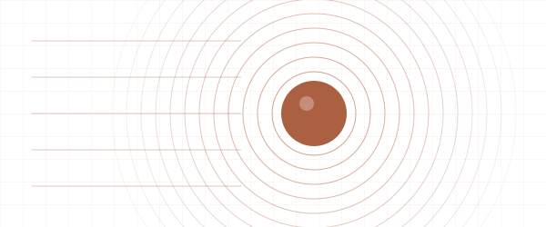

OPTICS / 01PyMieSim
↗Light scattering, made explorable.
A Python interface to Lorenz–Mie scattering, backed by C++ for single-particle studies and parameter sweeps.
Python · C++ · pybind11
Inside the project +
The question
Model how particle size, material, illumination, and detector geometry influence a scattering measurement.
The implementation
Solvers for spheres, cylinders, and core–shell particles connect configurable sources and detectors to pandas outputs.
Why it matters
Brings the physical model and experimental configuration into one reproducible workflow.
Explore the source & documentation ↗